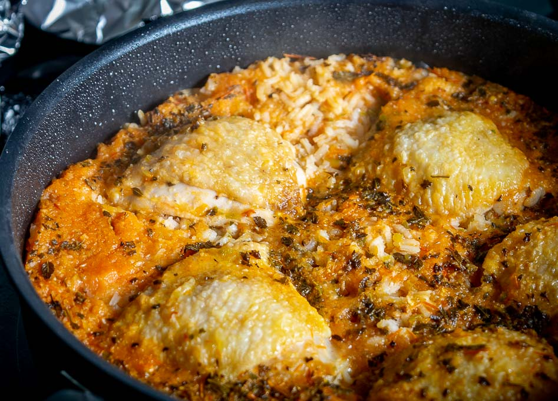

Mexican Chicken and Rice Recipe

Mexican chicken and rice is a flavorful and hearty dish that is enjoyed by many people all
around the world. The quality of this dish can depend on several key factors, including the
quality of the ingredients used and the preparation method. Ideally, the chicken should be
juicy and tender, with a slightly crispy exterior that is packed with flavor. The rice should
be perfectly cooked, with a fluffy and light texture that is infused with the flavors of the
chicken, spices, and herbs. The dish should be well-seasoned, with a balance of spicy and savory
flavors that complement each other perfectly.
Another important quality of Mexican chicken and rice is its versatility. This dish can be customized
to suit a wide range of dietary preferences and tastes, making it a popular choice for many different
people. For example, the dish can be made with brown rice or quinoa instead of white rice for a healthier
option, or can be made vegetarian by swapping the chicken with beans or tofu. It can also be served with
a variety of toppings and garnishes, such as avocado, cilantro, lime wedges, or sour cream, to add extra
flavor and texture. Overall, the qualities of Mexican chicken and rice make it a delicious and satisfying
dish that is sure to please anyone who loves bold and flavorful cuisine.
Ingredients
2 Lb of chicken
1 Cup rice
2 Cups water
1 Tbsp chicken bouillon
2/3 Cup tomato sauce
1/2 Tsp garlic powder
1/2 Tsp onion powder
1/4 Tsp Cumin
1 Onion
Steps
- Brown chicken, remove from pan.
- Brown rice.
- Add seasonings and mix.
- Add sauce, stir, add water.
- Get to a boil.
- Place chiken back into pan.
- Cover and cook on low fire for 20 minutes, DO NOT TOUCH THE LID
- After 20 minutes, turn off fire and leave lid on for 10 minutes.
- For the full experience serve with beans and enjoy.